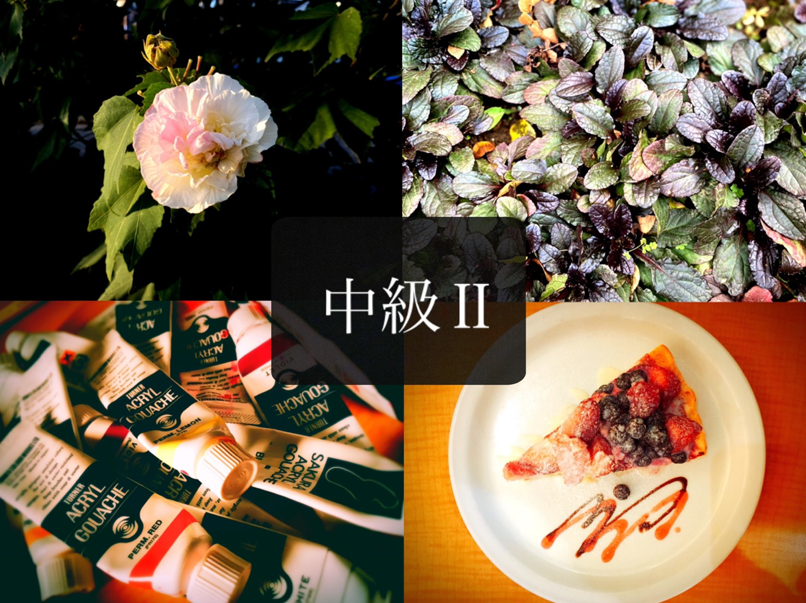
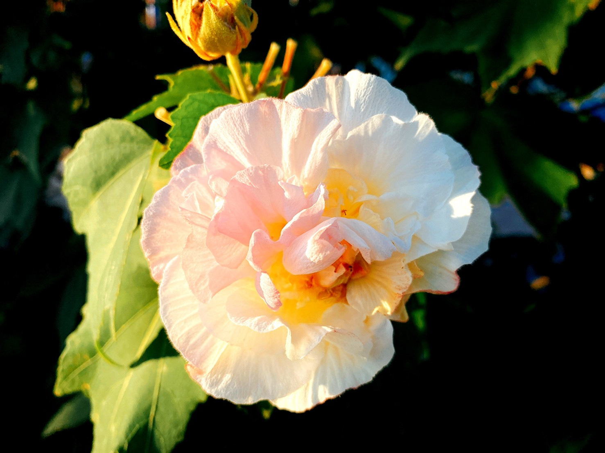
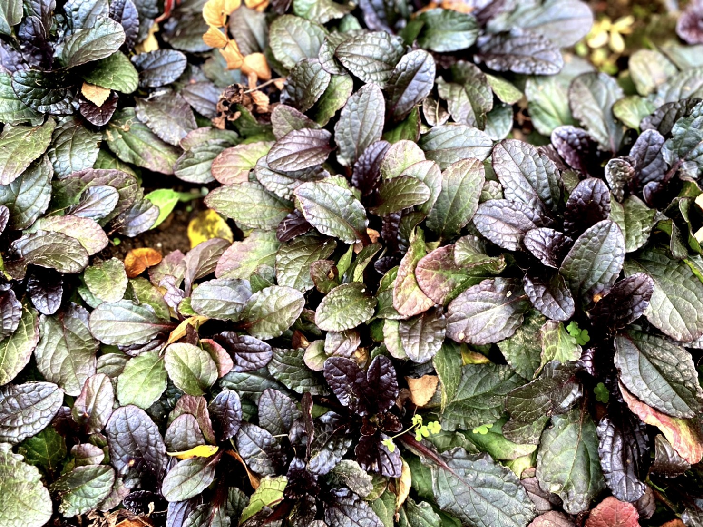
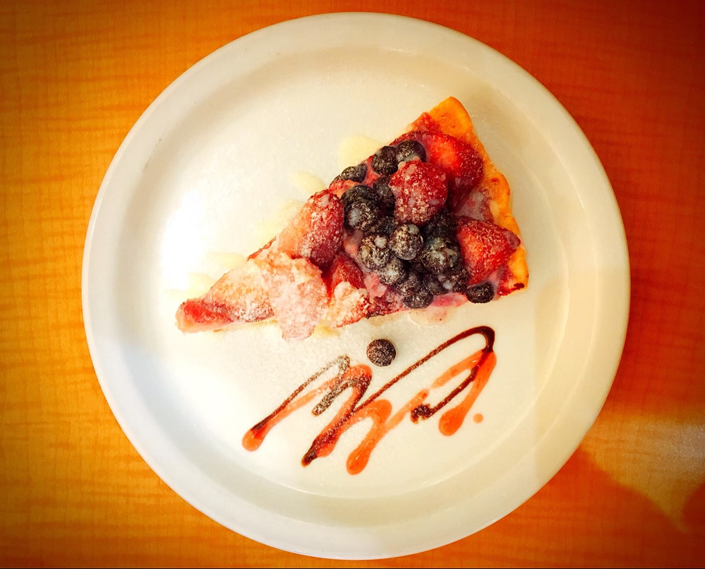
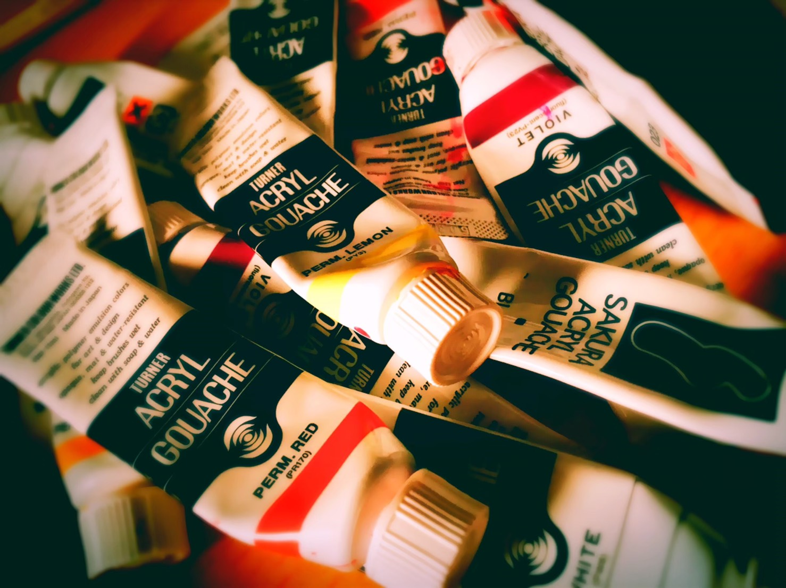

構図配置マスター

皆さんこんにちは。Nanaです。
今回は、写真を撮るときの対象物の配置や構図について紹介します。

まずは、ど真ん中に置く配置法です。
実は、対象物を中心に撮ることは意外と難しいのです。
しかし、この配置法は基本ではありますが一番インパクトがあります。

次は、同じもので画面を埋め尽くす方法です。
花や葉っぱ、文房具など同じ種類のものが複数手元にある時に使える配置法です。
デバイスの背景画像にするとかっこいいですよね。
この写真の場合は、真上かつ平行に撮る必要があったので結構難しかったですね。

最後は、食べ物を真上から撮る構図です。
皆さんは、真横もしくは斜め上から食べ物の写真を撮っているのではないでしょうか。
では今日からは、真上から撮ってみましょう。
まるで雑誌の切り抜きのような写真を撮ることができて、インスタ映え間違えなしです!
この構図もなかなか一発では上手くいきませんので、上達するまで頑張りましょう。

配置や構図を変えるだけでも写真の印象が変わります。
是非チャレンジしてみてください。